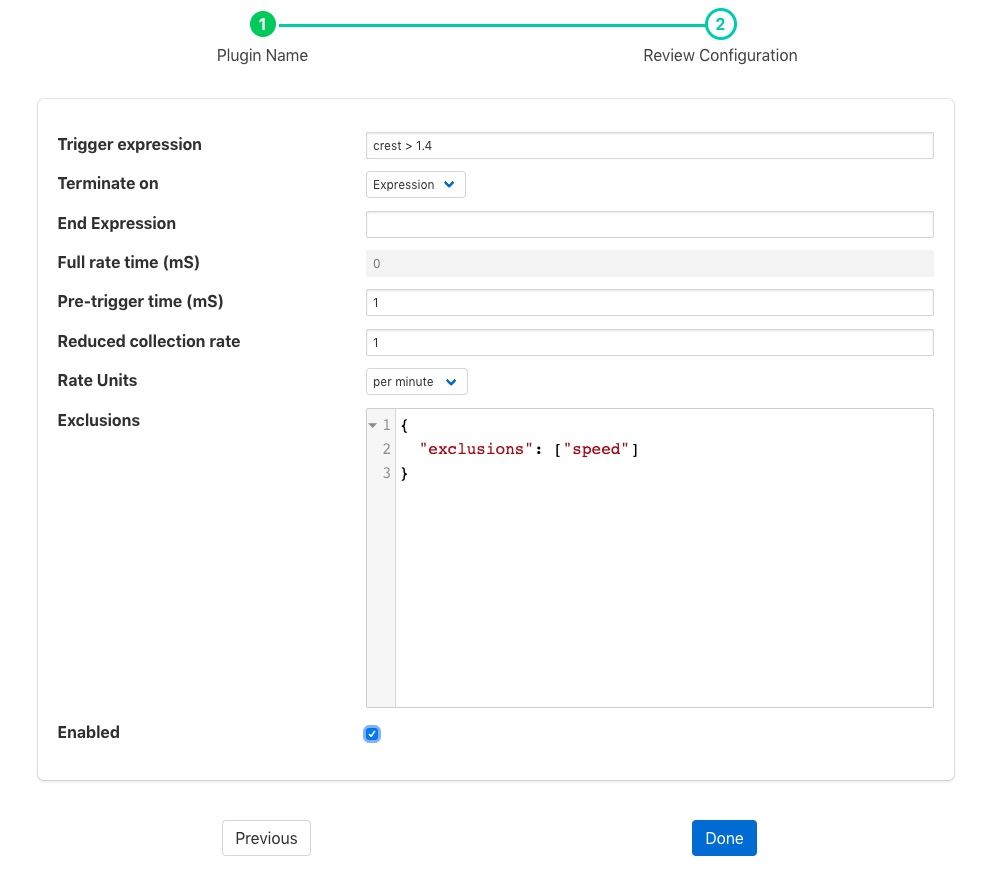
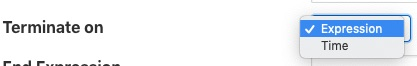
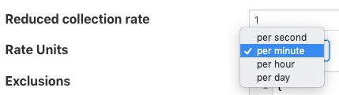

Rate Filter¶
The foglamp-filter-rate plugin that can be used to reduce the rate a reading is stored until an interesting event occurs. The filter will read data at full rate from the input side and buffer data internally, sending out averages for each value over a time frame determined by the filter configuration.
The user can provide either one or two simple expressions that will be evaluated to form a trigger for the filter. One expressions will set the trigger and the other will clear it. When the trigger is set then the filter will no longer average the data over the configured time period, but will instead send the full bandwidth data out of the filter. If the second expression, the one that clears the full rate sending of data is omitted then the full rate is cleared as soon as the trigger expression returns false. Alternatively the filter can be configured to clear the sending of full rate data after a fixed time.
The filter also allows a pre-trigger time to be configured. In this case it will buffer this much data internally and when the trigger is initially set this pre-buffered data will be sent. The pre-buffered data is discarded if the trigger is not set and the data gets to the defined age for holding pre-trigger information.
Rate filters are added in the same way as any other filters.
Click on the Applications add icon for your service or task.
Select the rate plugin from the list of available plugins.
Name your rate filter.
Click Next and you will be presented with the following configuration page
 Configure your rate filter
Trigger Expression: An expression to set the trigger for full rate data
Terminate ON: The mechanism to stop full rate forwarding, this may be another expression or a time window
 End Expression: An expression to clear the trigger for full rate data, if left blank this will simply be the trigger filter evaluating to false
Full rate time (ms): The time window, in milliseconds to forward data at the full rate
Pre-trigger time (ms): An optional pre-trigger time expressed in milliseconds
Reduced collection rate: The nominal data rate to send data out. This defines the period over which is outgoing data item is averaged.
Rate Units: The units that the reduced collection rate is expressed in; per second, minute, hour or day
 Exclusions: A set of asset names that are excluded from the rate limit processing and always sent at full rate
Enable your filter and click Done
For example if the filter is working with a SensorTag and it reads the tag data at 10ms intervals but we only wish to send 1 second averages under normal circumstances. However if the X axis acceleration exceed 1.5g then we want to send full bandwidth data until the X axis acceleration drops to less than 0.2g, and we also want to see the data for the 1 second before the acceleration hit this peak the configuration might be:
- Nominal Data Rate: 1, data rate unit “per second”
- Trigger set expression: X > 1.5
- Trigger clear expression: X < 0.2
- Pre-trigger time (mS): 1000
The trigger expression uses the same expression mechanism, ExprTk as the foglamp-south-expression, foglamp-filter-expression and foglamp-filter-threshold plugins
Expression may contain any of the following…
- Mathematical operators (+, -, *, /, %, ^)
- Functions (min, max, avg, sum, abs, ceil, floor, round, roundn, exp, log, log10, logn, pow, root, sqrt, clamp, inrange, swap)
- Trigonometry (sin, cos, tan, acos, asin, atan, atan2, cosh, cot, csc, sec, sinh, tanh, d2r, r2d, d2g, g2d, hyp)
- Equalities & Inequalities (=, ==, <>, !=, <, <=, >, >=)
- Logical operators (and, nand, nor, not, or, xor, xnor, mand, mor)
Note
This plugin is designed to work with streams with a single asset in the stream, there is no mechanism in the expression syntax to support multiple asset names.